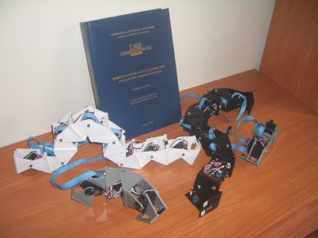

Este viernes, 21 de Noviembre de 2008, tengo la defensa de mi tesis. El lugar es el aula 503 del Módulo C-VI (Departamento de Geología) de la facultad de Ciencias de la Universidad Autónoma de Madrid. Hora: a las 12h
Aquí está disponible un mapa del campus de la UAM. Yo normalmente estoy en el laboratorio B-209 de la Escuela Politécnica Superior (edificio 6 en el mapa), pero la lectura será en el edificio 5 (Facultad de ciencias).
Información sobre cómo llegar al campus
Los miembros del tribunal son:
* Presidente: Dr. Vicente Matellán. Universidad de León.
* Secretario: Dr. Miguel Ãngel García. Universidad Autónoma de Madrid.
* Vocal: Dra. Cristina Urdiales. Universidad de Málaga
* Vocal: Dr. Jose MarÃa Cañas. Universidad Rey Juan Carlos
* Vocal: Dr. Houxiang Zhang.
Universidad de Hamburgo (Alemania).
La defensa será en Inglés (bueno, en mi Spanghlish!). Estáis todos invitados.
Me temo que a esa hora no podré ir pero… mucha suerte!!! 🙂
Mucha suerte Juan, estoy seguro de que te va a salir muy bien ;). A ver si nos vemos después para celebrarlo y tomarnos algo 😛
Un saludo.
Hola futuro Dctor,
Con todo el dolor del mundo no podre ir :p Luxemburgo sigue sin tener parada de metro directo a Madrid 🙂 de todas formas te mando todo el animo del mundo, dejales de piedra Obijuan!!!!
Un abrazo
TuXeR
Felicidades!!!, y mucha suerte!!!
buena suerte, nos vemos.
“use the force…”
Muchas gracias 😀
Juan!!!!
Muchisimas Felicidades! me imagino que fue todo fantastico!
Te debes haber quitado un gran peso de encima, no?
No te imaginas cuanto me alegro de que hayas terminado con la tesis… ahora ya podemos recuperar al friki que nos faltaba. 🙂
Mif!! Muchísimas gracias!!! Siii, todo fue muy bien. A ver si tengo tiempo y pongo una nueva entrada en el blog 🙂